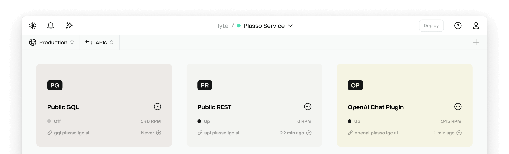
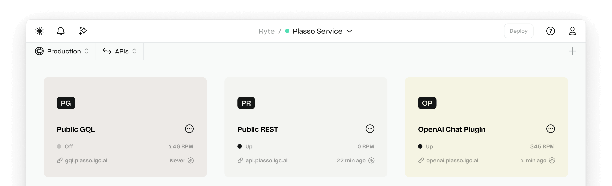
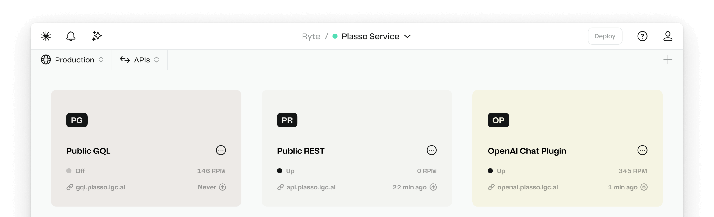
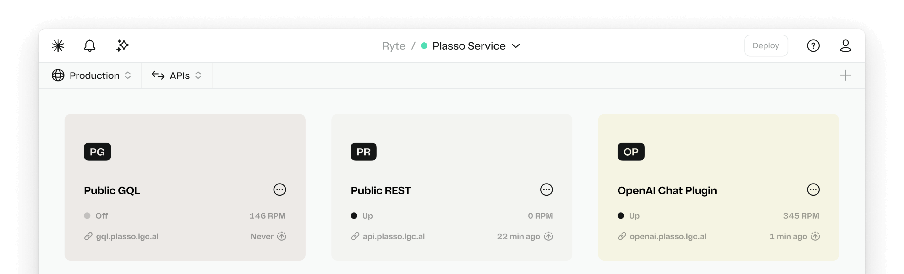

The only platform that gives AI the ability to autonomously build web services.
Never touch the command line, from provision to production.
Never manage infrastructure again. One click gets you: a database, APIs, deployments, hosting, etc.
Logical can get systems to market in minutes instead of weeks.